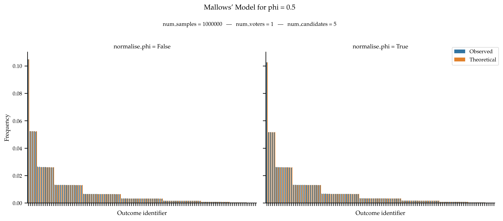

Mallows’ Models#
Mallows’s model is a sampling model parameterised by a central ranking. The probability of generating a given ranking is then exponential in the distance between the ranking and the central ranking.
- mallows(num_voters: int, num_candidates: int, phi: float, normalise_phi: bool = False, central_vote: ndarray = None, impartial_central_vote: bool = False, seed: int = None) list[list[int]][source]#
Generates votes according to Mallows’ model (Mallows, 1957). This model is parameterised by a central vote. The probability of generating a given decreases exponentially with the distance between the vote and the central vote.
Specifically, the probability of generating a vote is proportional to phi ** distance where phi is a dispersion coefficient (in [0, 1]) and distance is the Kendall-Tau distance between the central vote and the vote under consideration. A set of num_voters vote is generated independently and identically following this process.
The phi coefficient controls the dispersion of the votes: values close to 0 render votes that are far away from the central vote unlikely to be generated; and the opposite for values close to 1. Depending on the application, it can be advised to normalise the value of phi (especially when comparing different values for phi), see Boehmer, Faliszewski and Kraiczy (2023) for more details. Use
normalise_phi = Trueto do so.For an analogous sampler generating approval ballots, see
noise().- Parameters:
num_voters (int) – Number of Voters.
num_candidates (int) – Number of Candidates.
phi (float) – The dispersion coefficient.
normalise_phi (bool, default:
False) –Indicates whether phi should be normalised (see Boehmer, Faliszewski and Kraiczy (2023))
central_vote (np.ndarray, default:
np.arrange(num_candidates)) – The central vote. Ignored ifimpartial_central_vote = True.impartial_central_vote (bool, default:
False) – If true, the central vote is sampled fromimpartial().seed (int, default:
None) – Seed for numpy random number generator.
- Returns:
Ordinal votes.
- Return type:
list[list[int]]
Examples
from prefsampling.ordinal import mallows # Sample from a Mallows' model with 2 voters and 3 candidates, the parameter phi is 0.6 mallows(2, 3, 0.6) # For reproducibility, you can set the seed. mallows(2, 3, 1, seed=1002) # Parameter phi should be in [0, 1] try: mallows(2, 3, -0.5) except ValueError: pass try: mallows(2, 3, 1.2) except ValueError: pass
Validation
The probability distribution derived from Mallows’ model is well known. Specifically, given
 agents and
agents and  candidates, a parameter
candidates, a parameter  and a central ranking
and a central ranking  , the probability of generating a ranking
, the probability of generating a ranking
 is equal to:
is equal to:
where
 is the kendall-tau distance between the ranking and the
central ranking.
is the kendall-tau distance between the ranking and the
central ranking.We test that the observed frequencies of rankings aligns with the theoretical probability distribution. The fact that the normalisation of phi does not seem to impact the figure is due to the small number of candidates that reduces the distance between phi and its normalised value.
When
phiis equal to 1, we are supposed to observe a uniform distribution over all rankings.
References
Non-null ranking models, Colin Lingwood Mallows, Biometrica, 44:114–130, 1957.
Properties of the Mallows model depending on the number of alternatives: A warning for an experimentalist., Niclas Boehmer, Piotr Faliszewski and Sonja Kraiczy, Proceedings of the International Conference on Machine Learning, 2023.
{kind=link}
{kind=link}
{kind=link}
- norm_mallows(num_voters: int, num_candidates: int, norm_phi: float, central_vote: ndarray = None, impartial_central_vote: bool = False, seed: int = None) list[list[int]][source]#
Shortcut for the function
mallows()withnormalise_phi = True.
- phi_from_norm_phi(num_candidates: int, norm_phi: float) float[source]#
Computes an approximation of the dispersion coefficient of a Mallows’ model based on its normalised coefficient (norm_phi).
- Parameters:
num_candidates (int) – The number of candidates
norm_phi (float) – The normalised dispersion coefficient of the Mallows’ model
- Returns:
The (non-normalised) dispersion coefficient of the Mallows’ model
- Return type:
float